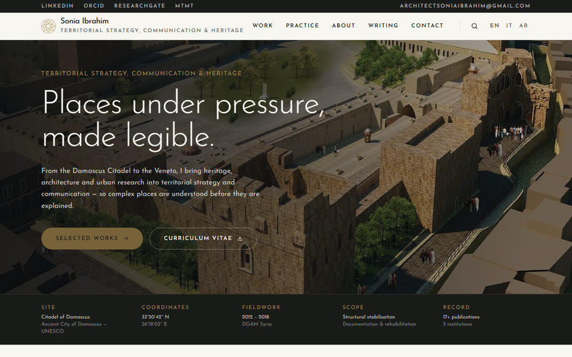
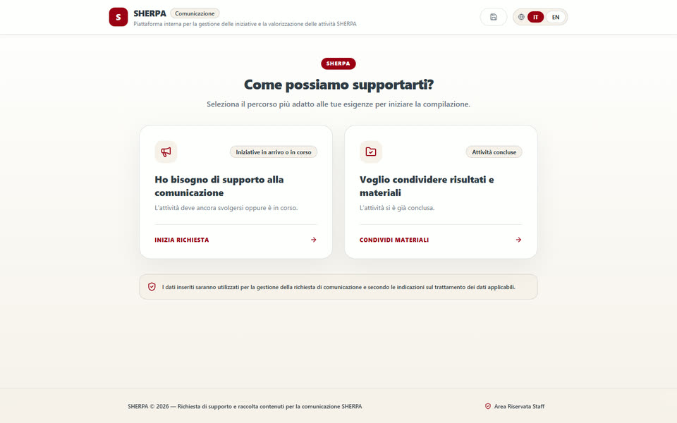
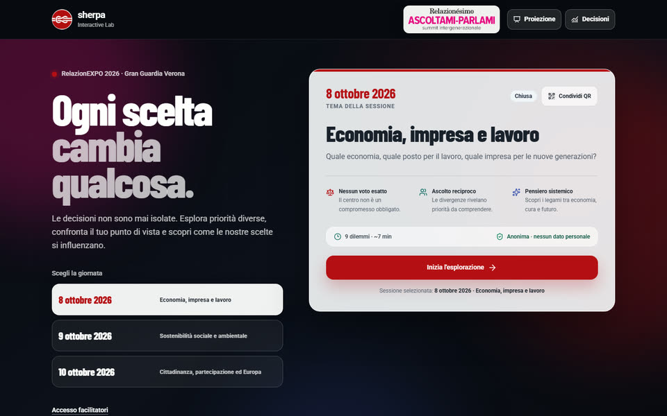
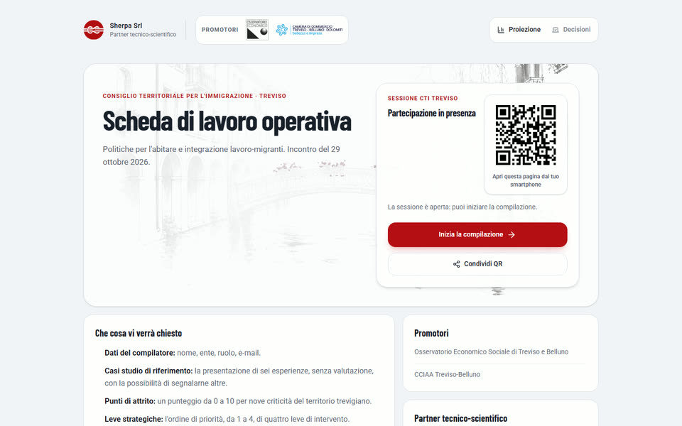
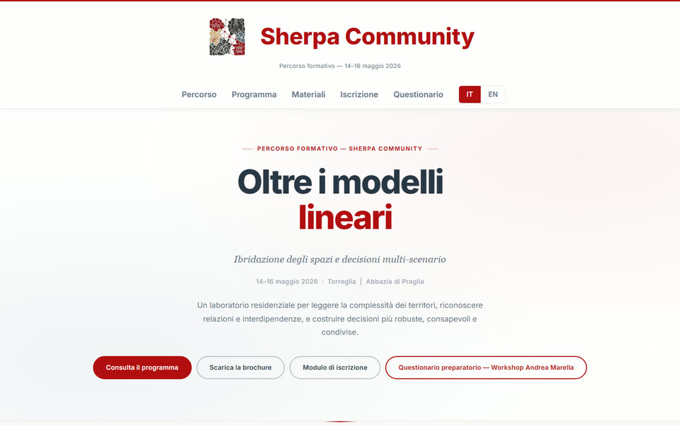
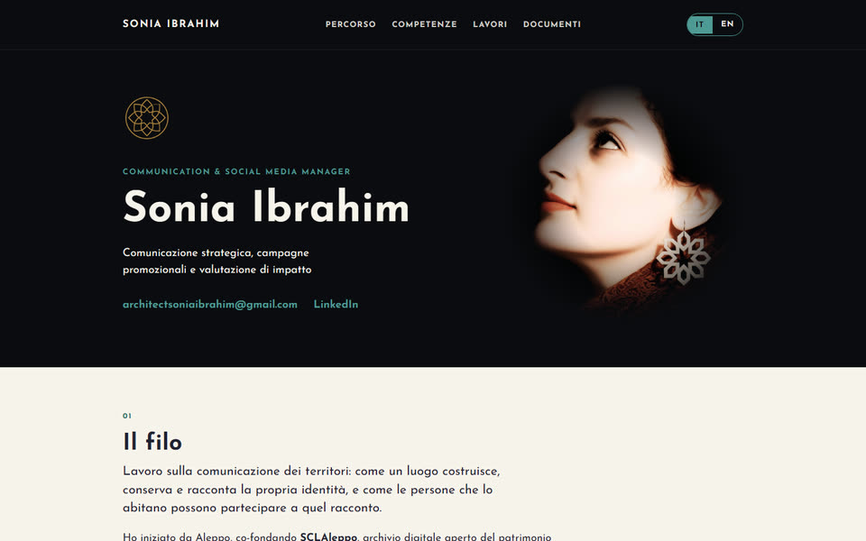
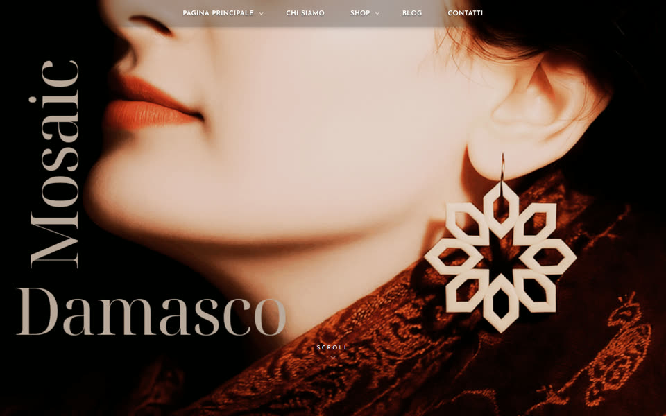
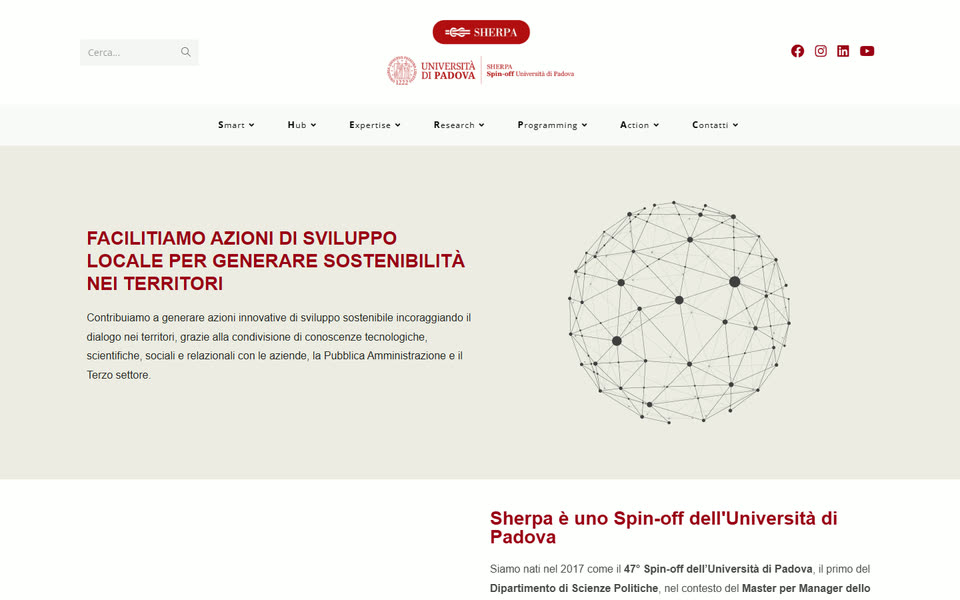

Selected websites
-

Personal · professional site
soniaibrahim.it
My professional site for territorial strategy, communication and heritage. Trilingual, with content edited from a database rather than in code.
Visit site → -

Client · Sherpa SRL
Sherpa Communication Hub
An AI-assisted intake platform where a team and its network propose content and request communication support. Two guided paths, photo uploads and a staff area.
Visit site → -

Client · Sherpa SRL
Ascoltami–Parlami Interactive Lab
A participatory app for RelazionEXPO 2026 in Verona. Students answer from their phones via QR code, while a facilitator console and a live projection show the shared result.
Visit site → -

Client · Sherpa SRL
CTI Treviso · Working sheet
A participatory working sheet for the Territorial Council for Immigration of Treviso. Participants join by QR code, score local friction points and rank strategic levers, with projection and decision views for the room.
Visit site → -

Client · Sherpa SRL
Sherpa Community · Oltre i modelli lineari
The site for a three-day residential training programme: programme, materials, registration and a preparatory questionnaire.
Visit site → -

Personal · portfolio
Communication portfolio
A bilingual portfolio and final report for a professional qualification in communication and promotional campaigns.
Visit site → -

Own brand
Mosaic Damasco
A brand site and shop for jewellery inspired by the mosaics of Damascus.
Visit site → -

Client · Sherpa SRL · site management
sherpasrl.it
The website of Sherpa SRL, a University of Padova spin-off. I manage the site: content, pages and custom HTML sections built into the Elementor layouts.
Visit site →
Work with me
Need a site, an event platform or an interactive tool? Tell me what it is for and who will use it.
architectsoniaibrahim@gmail.com